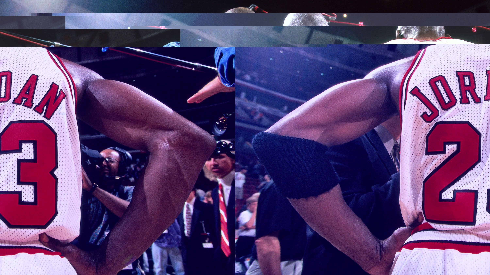
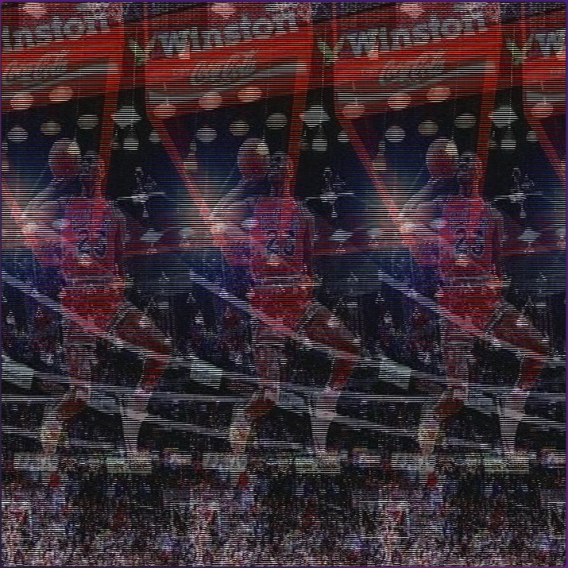
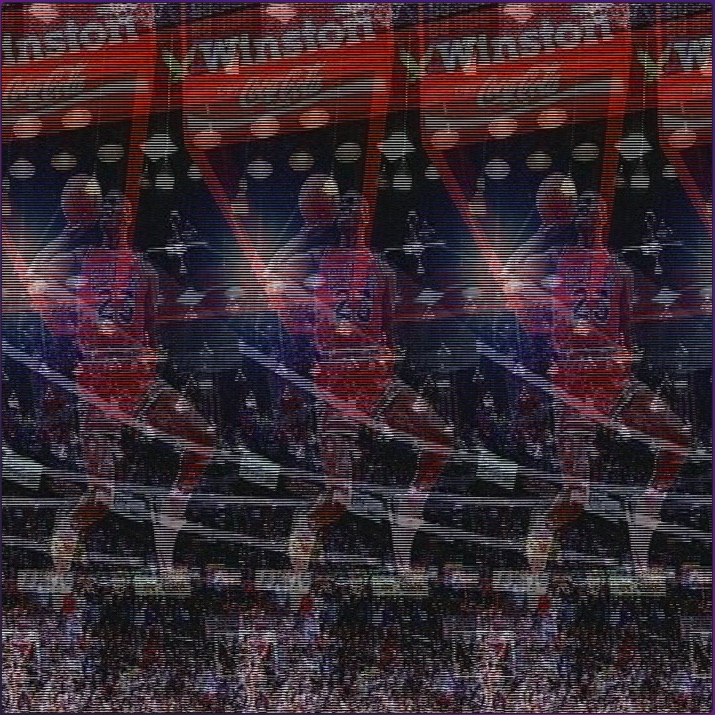
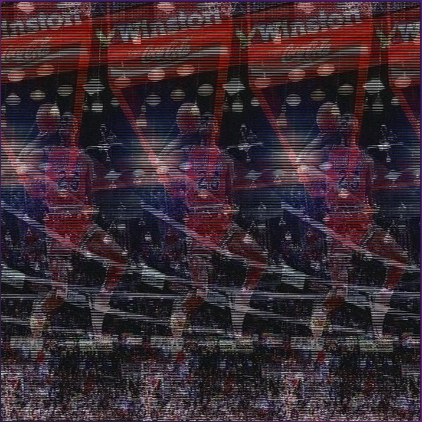
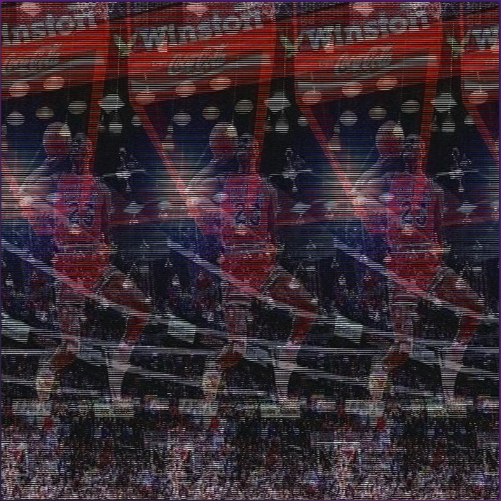

Glitch
 


Here are a couple of glitch pieces I worked on. This was the first time ever doing digital art and I have to say it was not as difficult as I thought. WIthout even realizing it I created some pretty nostalgic images from my childhood, the quality of the image.